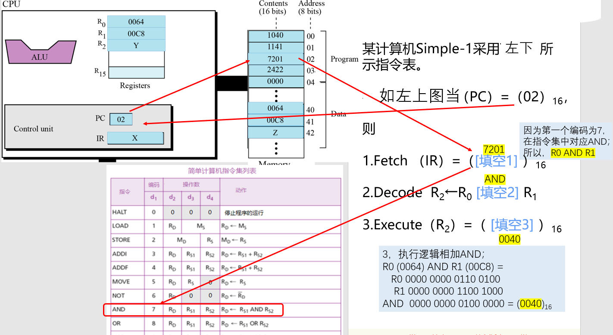

综合题
计算机由哪几部分组成？
由运算器、控制器、存储器、输入设备和输出设备五大部分构成，
机器字长、指令字长、存储字长的区别和联系
机器字长：计算机能直接处理二进制数据的位数，一般等于内部寄存器的大小。
指令字长：一个指令字中包含二进制代码的位数。
存储字长：一个存储单元存储二进制代码的长度。
它们都是字节的整数倍。
什么是二进制溢出
当你给一个固定位数的二进制数分配的存储空间（比如 8 位、16 位）存不下计算结果时，超出的部分会被直接丢弃，导致计算结果出错
存储器按物理位置分类
主要分为内部存储器和外部存储器两大类，二者在速度、容量、成本和用途上有显著差异。内部存储器是直接与 CPU 相连的存储部件，位于计算机主机内部，用于临时存储 CPU 正在运行的程序和处理的数据。外部存储器位于主机外部，不直接与 CPU 相连，需要通过 I/O 接口和总线与主机通信，用于长期存储大量程序和数据。
存储器的分级结构
寄存器（Register） 位于 CPU 内部 访问速度最快、容量最小、成本最高 高速缓存（Cache） 位于 CPU 与主存之间 用于存放常用数据，减少访存延迟 主存（Main Memory，RAM） 程序运行时直接访问 速度和容量居中，断电数据丢失 外存 / 辅助存储器（Secondary Storage） 如硬盘、SSD
高速缓冲存储器（Cache）
是一种位于 CPU 与主存之间 的高速小容量存储器，用于存放 近期或频繁访问的数据和指令，以减少平均访存时间。缩小 CPU 与主存之间的速度差距，提高程序的整体执行效率。
控制器组成
主要由程序计数器、指令寄存器、指令译码器和控制信号及时序控制电路组成。
什么是RAM、SRAM、DRAM、ROM、PROM、EPROM、EEPROM
RAM：是随机存取存储器，在程序的执行过程中既可读出又可写入信息。
SRAM：靠触发器原理存储信息，只要电源不掉电，信息就不丢失。
DRAM：靠电容存储电荷原理存储信息，即使电源不掉电，由于电容要放电，信息也会丢失，故需再生。
ROM：是只读存储器，在程序执行过程中只能读出信息，不能写入信息。
PROM：即可一次性编程的只读存储器。EPROM即可擦除的只读存储器，利用紫外线抹去原有信息，可多次编程。
EEPROM：即电可擦除只读存储器，可多次编程。
设有一个64K×8位的RAM芯片，试问该芯片共有多少个基本单元电路（简称存储基 元）？
存储基元总数= 64K×8位=512K位= 219位
某计算机字长为32位，其存储容量是64KB，按字编址其寻址范围是多少？若主存以字节编址，其寻址范围是多少？
已知条件:
字长为32位，说明每个"字"占用4个字节（32位 ÷ 8 = 4字节）。
存储容量为64KB，即64 * 1024字节
按字编址，每个地址单位代表一个“字”，而一个字占4字节。
计算字编址范围：
总字数 = 总字节数 ÷ 每字字节数 = 65536字节 ÷ 4字节 = 16384个字。
所以，按字编址的寻址范围是从0到16383（总共16384个字地址）。
按字节编址的情况：
每个字占4个字节，因此字节地址是字地址的4倍。寻址范围为64K.
字地址为0对应字节地址0、1、2、3（共4个字节），字地址1对应字节地址4、5、6、7，以此类推。
一个容量为16 K×32位的存储器，其地址线和数据线的总和是多少？
数据线的数量：
存储器的每个存储单元是32位（即4字节）。因此，每个存储单元需要32根数据线。
地址线的数量：
存储器的容量为 16 K（即16 × 1024 = 16384）个存储单元
214=16384 所以，地址线的数量是 14 根。
总线的总数是地址线和数据线数量的和： 14(地址线)+32(数据线)=46根
假如一台计算机有8个数据寄存器（R0~R7），512个字的存储空间以及16种不同的指令（如add，subtract等），那么指令 subtract M R1 需要占多少位空间？如果数据和指令使用相同的字长，那么每个数据寄存器大小是多少字节？ 计算机中的IR大小是多少位？PC大小是多少位？数据总线多少位？地址总线多少位？控制总线最少需要多少位？
答：
| 参数名称 | 计算结果 | 推导依据 |
|---|---|---|
| 指令字长 | 16位 | 指令 subtract M R1 占用空间：包含三个部分： 操作码（subtract）、存储器地址（M）和寄存器编号（R1）操作码：16 种指令，需要log2 16 = 4位。 存储器地址 (M)：512 个字，需要 log2 512 = 9位。 寄存器编号 (R1)：8 个寄存器，需要 log2 8 = 3 位。 4 + 9 + 3 = 16 位。 |
| 数据寄存器大小 | 2字节 | 与指令字长相同16位，16/8（每个字长8位）=2字节 |
| IR（指令寄存器）大小 | 16位 | 与指令字长相同，存放整条指令 |
| PC（程序计数器）大小 | 9位 | 程序计数器对应存储器地址空间说，即对应 512 个字的寻址能力，512=29，即9位 |
| 数据总线宽度 | 16位 | 数据总线宽度，即，CPU 一次能并行传输的数据位数，= 与机器字长；在定长指令机中，机器字长 = 指令字长；所以：= 16位 |
| 地址总线宽度 | 9位 | 也即是，存储器的地址总数，容量512，log2512=9，也即是512=29，9位 |
| 控制总线最少位数 | 4位 | 控制总线用于传输控制信号。最基本的控制需求是区分 16 种不同的操作。最少需要 4 位（足以编码 16 种不同的指令控制信号）log216=4 |
简单计算机Simple-1机器周期相关问题

1, 取指Fetch过程，PC为02时，对于存储器地址第02行，因为PC(00)对于第一行00，PC(01)对应01行地址，并加载LOAD至IR（指令寄存器），所以 Fetch(IR) = (7201)16
2,译码(Decode)过程，编码7201的第一个编码为指令集中7，所对应的是逻辑与运算AND；因此，R2 ← R0 AND R1
3, 执行逻辑与运算，把二进制中AND运算后，转化为16进制，结果为(0040)16
参考文献
计算机科学导论（讲义）2025，王红涛，河南大学
计算机组成原理 (第2版)笔记和课后习题(含考研真题)详解 --唐朔飞